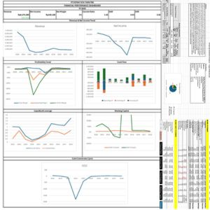

Tegar Ardiyansyah
Administrasi Keuangan | Financial Planning & Analyst
Lulusan Manajemen (Keuangan) dengan minat pada Administrasi Keuangan, FP&A, Corporate Finance. Memiliki pengalaman dalam pengolahan data, analisis keuangan, reporting, budgeting, serta asset analysis melalui pengalaman profesional, akademik, dan berbagai project.